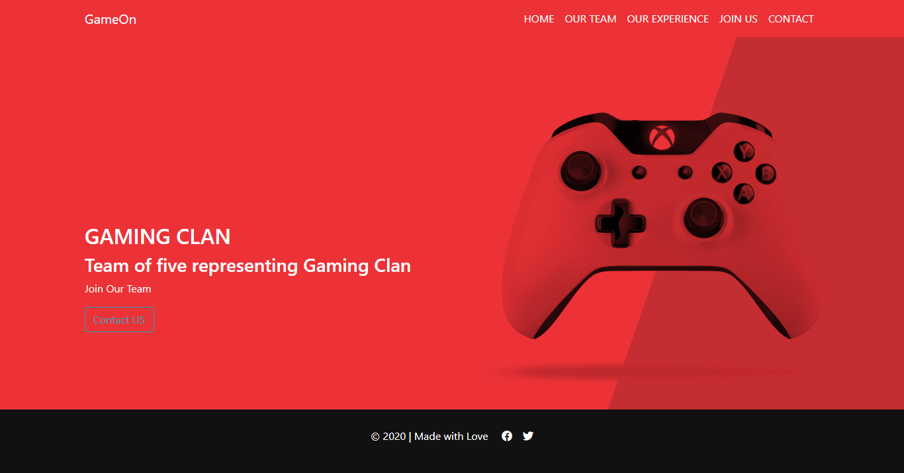

<section id="usertemplets">
<mat-sidenav-container class="example-container" >
    <mat-sidenav #sidenav mode="side" [(opened)]="opened" (opened)="events.push('open!')"
                 (closed)="events.push('close!')">                
                 <div class="slid text-white text-center my-5 mb-4">                    
                    <div class="pt-5 justify-content-center align-items-center">
                     
                   <h5 class="text-center">danielle</h5>
                  
                    </div>
                 
                     <ul class="fa-ul text-left ml-2">
                       <li>
                         <a [routerLink]="['/usertemplets', 1]">
                         <span><i class="fas fa-columns mr-2 pt-5 "></i></span>Dashboard
                       </a>
                       </li>
                       <li>
                         <a  [routerLink]="['/userprofile', 1]">
                         <span><i class="fas fa-bars mr-2 pt-4"></i></span> Profile Settings
                         </a>
                       </li>
                       <li>
                        <a  [routerLink]="['/changepassword', 1]">
                        <span><i class="fas fa-unlock pt-4 mr-2"></i></span> Change Password
                        </a>
                      </li>
                     </ul>
                   </div> 
    </mat-sidenav>
  
    <mat-sidenav-content>
 <!-- <p><mat-checkbox [(ngModel)]="opened">sidenav.opened</mat-checkbox></p> -->
      <p class="open-nav"><a mat-button  (click)="sidenav.toggle()"><i class="fas fa-bars fa-2x"></i> </a></p>
    
   <div class="container">
    <div class="row "> 
      <div class="col-md-12">
        <h4 class="text-center">Your Templetes</h4>
        <hr />   
      </div>     
      <div class="usertempletes ml-5">
          <div class="col-md-4 mb-5 all blog " *ngIf="userTempletes.length>0">
            <div class="item position-relative rounded">
              
              <div
                class="image-container rounded justify-content-center align-items-center"
              >
                <!---------------------------------------------->
                <div class="icon position-relative">
                  <a [routerLink]="['/edittemplete/1/1']" routerLinkActive="router-link-active" >
                   <!--  <i class="fas fa-eye icon2"> -->
                     <i class="fas fa-download mr-2 icon1">
                      <div class="icon11"></div>
                      <div class="icon12 rounded text-white">
                        Download
                      </div>
                    </i></a
                  >
                 <!--  target="_blank" href="https://bezel-page.netlify.app/" -->
                 <!--  <a >
                    <i class="fas fa-eye icon2">
                      <div class="icon21"></div>
                      <div class="icon22 rounded text-white">
                        Live Preview
                      </div>
                    </i></a
                  > -->
                </div>
              </div>
              <!-------------------------->
            </div>
          </div>
      </div>
    </div>
    </div>
 
    </mat-sidenav-content>
  </mat-sidenav-container>
</section>